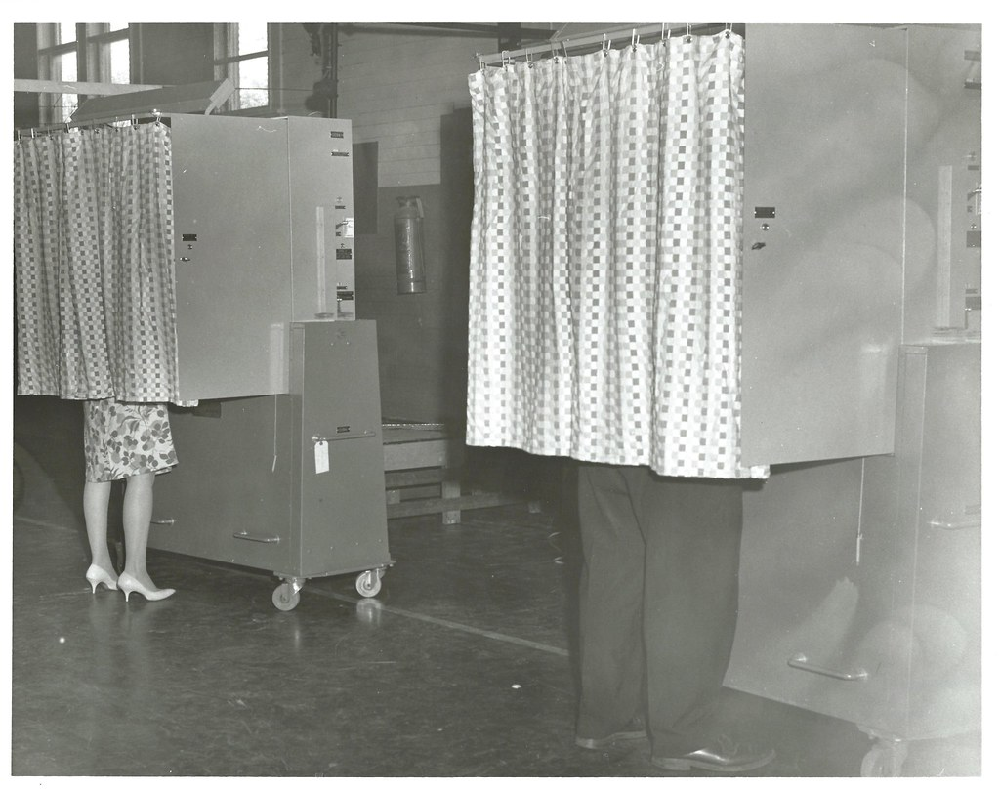

Challenges to voting rights in this country, like the ones we've seen recently, are hardly a 21st-century invention. Entrenched groups have long tried to keep the vote out of the hands of the less powerful. Indeed, America began its great democratic experiment in the late 1700s by granting the right to vote to a narrow subset of society — white male landowners. Even as barriers to voting began receding in the ensuing decades, many Southern states erected new ones, such as poll taxes and literacy tests, aimed at keeping the vote out of the hands of African American men.

Over time, voting rights became a bipartisan priority as people worked at all levels to enact constitutional amendments and laws expanding access to the vote based on race and ethnicity, gender, disability, age and other factors. The landmark Voting Rights Act of 1965 passed by Congress took major steps to curtail voter suppression. Thus began a new era of push-and-pull on voting rights, with the voting age reduced to 18 from 21 and the enshrinement of voting protections for language minorities and people with disabilities.